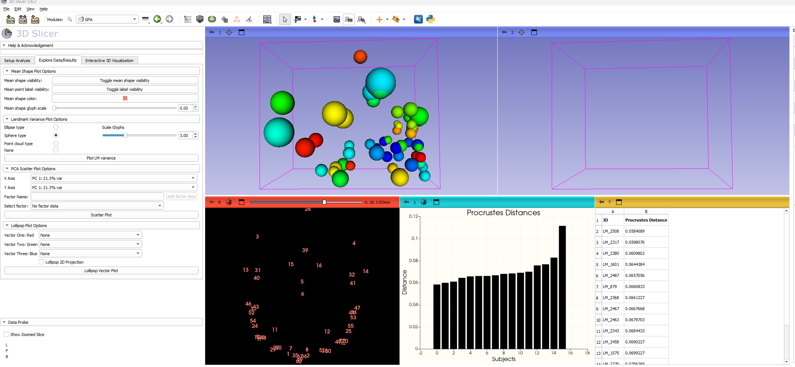

Morphometrics
Morphometrics Workflow
Photogrammetry and Slicer Workflow for 3D Geometric Morphometrics
Software
3D Slicer
Extensions
- SlicerIGT
- SlicerMorphThis workflow is in progress. The following walkthrough provides instructions on how to import, align, fix landmarks to, and analyze data from the models created in Reality Capture. Before any of this is achieved, it is important to load the correct modules into 3D Slicer.
Loading Modules
- On the main task ribbon, find the icon for
Extensions Manager- Blue icon with a puzzlepiece and capital ‘E’
- This will pull open a window with a
Manage Extensionstab and aInstall Extensionstab
- Navigate to the
Install Extensionswindow- You can either scroll through the available extensions to find the ones needed or use the search window in the top right corner
- Once the extensions are installed, navigate back to the
Welcome to Slicerscreen Fig.1
Importing Data
This step specifies the process of loading data for a single model with no associated landmark data. For more details on how to import multiple files for alignment and landmark configuration see the Alignment and ALPACA sections below
- To import the Reality Capture models, click on the
Add Databutton- This button can be found twice on the welcome screen or under the
Filedropdown menu
- This button can be found twice on the welcome screen or under the
- Select
Choose File(s) to Add- Select both the Model file and the Texture file Fig.2
- Give the software a moment to load your data and you should see two images loaded Fig.2
- To keep track of what files are loaded in Slicer, navigate to the
Datawindow from theModulesdropdown menu. See Below
- While not important for this step, you can check to see that your
Texturefile works with the model by opening theTexture Modelmodules- This can be done by either scrolling through the Modules dropdown menu to the
Surface Modelstab and then to theTexture Modelmodule or by clicking on the magnifying class in the task ribbon and searching forTexture Model - In either case you will open a window with three boxes for data and parameters.
- In the
Modelbox, make sure your Reality CaptureOBJfile is selected - In the
Texturebox, make sure your resizedPNGtexture file is selected - The last box provides the option to
save color information as point data. My practice is to set this asRGB Vector
- In the
- Click on
Applyto see your textured model Fig.3
- This can be done by either scrolling through the Modules dropdown menu to the
Model Alignment
When working with multiple models it becomes important to make sure that each is in the same alignment within a 3D cartesian plane. To accomplish this we make use of the FastModelAlign module available through slicer morph.
This step requires at least two models. We recommend establishing one model as the template for this step as well as for the landmark configuration process in future steps.
- Load in an additional model.
- follow the steps from above and check that you have two models loaded in the
Datawindow
- follow the steps from above and check that you have two models loaded in the
- Find the SlicerMorph tab under the
Modulesdropdown menu- Select
SlicerMorph Utilities- Select
FastModelAlign
- Select
- Select
- The options in this model are somewhat misleading
- Under
Source Modelselect the model that you are trying to align to a template - Under
Target Modelselect the model that you will use as a template - Click on the box that says
Skip Scaling - For the
Output registered modelselect the same model as you used forSource Model
- Under
- Click on the
Test pointcloud subsamplingbutton- Give it a moment to generate a point cloud. Typically between 5000-5500 points
- Click on
Run rigid registration
Once the rigid registration is completed both models will be overlapping. To see the differences between the two models you can choose to have one textured and the other not or you can navigate back to the Data window and change the colors of either model.
- With this complete, click on the
Savebutton- This will open a
Save Scenewindow with multiple files selected - Make sure that only the file you need to save is selected, in this case the model that was being aligned.
- This will open a
Landmark Configuration
The process of placing landmarks in 3D Slicer is not overly complicated as long as the user has the following:
- A list of desired landmarks
- Definitions of each landmark with instructions on how to find it this sometimes differs if taking the landmark manually or digitally
- A clear method of organizing landmarks so that each landmarking sequence is the same for every specimen
- A clear way of lablling landmarks and format for saving landmark files
- The module used for configuring Geometric Morphometric landmarks is called
Markupsand can be found either in the modules dropdown menu or on the primary task ribbon.- In either case, the module wile be associated with an icon that looks like three red asteristks arranged in a triangle.
- Once in the
Markupsmodule, select thePoint Listbutton to establish your coordinate file.- Slicer will give this list a priliminary name which should be changed to suit suit the researchers needs
- I use the prefix
LMfollowed by an underscore* and the specimen number - Ex. LM_####
- *The underscore becomes important latter when using this landmark data in
R. This is becauseRdoes not like spaces in file names.
- I use the prefix
- Slicer will give this list a priliminary name which should be changed to suit suit the researchers needs
- After naming the
Point List, open theDisplayandControl Pointsmenus below.- When hovering the cursor over the model, a potential point will display with an icon and specimen/point number
- For ease of use, the size of both or either of these features can be changed in the display menu
- Set this to your preference (often a touch smaller than the default)
- It is good to follow what point number you are on. For each specimen assessed through this workflow, the point numbers should match. For example, if point one on specimen one is Left Alare, point one on all specimens should be Left Alare. Do Not Rearrange the Points for Different Specimens
- A couple of notes on using
Markups- To place a
Control Point, make sure thePlace control pointbutton is selected - While placing control points, left clicking anywhere will place a point. If you need to rotate the model, right click to switch back to the cursor. Then click the
Place control pointbutton above to switch back. - If a control point is placed in the wrong spot (inevitable in this process) it is better to move it than to delete it.
- If it is in the wrong order (i.e. you placed the right before the left) you can either move multiple points or rename the points. Either case is better than deleting the control point.
- When developing your
Point Listit is good practice to name each point in the corresponding description box- This will become even more useful later
- To place a
- Craniometric Points in Slicer
- Placing points in Slicer has it’s advantages and disadvantages
- Advantages
- The R, A, S (Right, Anterior, Superior) fields can allow one to find the most lateral, anterior, superior, and etcetera surfaces on the model.
- If your scale was set appropriately in Reality Capture, finding points such as Opisthocranion become simple by using the line tool to measure the distance from Glabella to the farthest surface on the posterior aspect of the skull
- The model is easily rotated to establish points such as Basion on the inferior aspect of the skull
- It is easy to visually keep track of data along the way by keeping each control point viewable
- Disadvantages
- There is no question that some detail is lost
- Faint suture lines, for example, that may be visible with appropriate light and magnification are occassionally lost in the digital format
- Features that are sometimes easier to feel (i.e., temporal lines) are more difficult to discern
- To clarify how each of the landmarks used in this study were obtained, a
Data Dictionarywith descriptive text and images will be generated soon.
- There is no question that some detail is lost
- Saving Data
- Once all points have been established, click on the
Savebutton in the primary task ribbon - Be sure to only select the file that you intended (Slicer will auto-select multiple files) and establish the proper directory for it
- Since we modified the cloned landmark set, Slicer attempts to save this file with the original template data
- When you click on
Savefrom this window, Slicer will alert you towarningswhich occured while saving. Ignore this and save away.
- Once all points have been established, click on the
ALPACA!
Once a primary Point List is established with one model, SlicerMorph provides a wonderful shortcut for establishing the same point list for other specimens. This is done through the ALPACA module.
- Find
SlicerMorphfrom the modules dropdown menu.- Hover over
Geometric Morphometrics- Select
ALPACA
- Select
- Hover over
- There are a few data fields to fill in
- Under
Source Modelselect the model you are using for a template- This will likely be the same template model used for
Alignment - Be sure that you have the necessary landmark data associated with this model
- This will likely be the same template model used for
- Under
Source Landmark Setselect the.fcsvfile (Point List) you saved with the coordinate data - Under
Target Modelselect the model file that does not have associated coordinate data - Make sure that
ScalingandProjectionare not chaecked - Leave the
Target Landmark Set (Optional)field blank
- Under
- Select
Run subsampling- *Be aware that if you have the texture data loaded for any of the models when running APACA, the subsampling process will not work. Make sure you only have Model and Landmark data loaded
- You will generate a pointcloud (similar to the alignment process) that sits somewhere between 5000-5500 points
- Select
Run ALPACA- When ALPACA is complete you will be provided with a clone of the landmark data that can be modified over your target model.
- There are a couple of different files generated after running ALPACA. You can review these when navigating back to the
Datamodule or, better for our purposes, back to theMarkupsmodule - In
Markupsyou should see 3Point Lists- The original template file
- The cloned template file
- The ALPACA extimate file
- Despite the ALPACA effort, these files can never be perfectly placed on the new model. Thus, the next step is to manually adjust each control point to best match the landmark definition.
- The main benefit of running ALPACA then becomes the transfer of the point list and the increased efficiency gained by adjusting points rather than placing new points.
- __Be sure that you are adjusting the correct point list. I work with the
Source_Landmarks_clonefile
- Rename the
Point Listyou are adjusting- Match the file format from above (i.e., LM_####)
- Load in the Texture data
- Follow the instructions listed under
Importing Dataabove
- Follow the instructions listed under
- Adjust Landmarks and save as described in the
Landmark Configurationsection above.
Consolidating Landmark Data
- Thus far, each Model, Texture, and Landmark file has been saved in its own folder.
- Ex. Dcusimano -> Skull ###, Skull ###, Skull ###
- With the incoming Landmark Data, I found it conveneient to have an additional folder for only this information
- Ex. Dcusimano -> Coordinate Data
- This will help tremendously when running our analyses in the next step
Generalized Procrustes Analysis in SlicerMorph
The last step for a typical Geometric Morphometric analysis in Slicer is to run the Generalized Procrustes Analysis (GPA). With a decent sample of Landmark data, this step is super simple.
- Navigate to the
GPAmodule under theSlicerMorphtab in the modules dropdown menu SlicerMorph->Geometric Morphometrics->GPA - Click on
Select Landmark Files-If you consolidated your files into one folder, you can simply select all -It is possible to select the individual files from multiple folders, but far more tedious -Click the...button next to theSelect Output Directoryfield -I keep the output directory as theCoordinate Datafolder -I choose to select theUse Boas coordinates for GPAbutton - Select
Execute GPA + PCA- When the analysis is complete, Slicer will provide you a few windows to explore your data
- One option is to Navigate to the
Explore Data/Resultswindow from the GPA task ribbon - As a general assessment, I like to use the
Plot LM Variancetool to see where most of the landmark variation is coming from

- Analysis files
- While fun to explore the results in Slicer, the most important product of the GPA is the output files it provides.
- These are viewable in the folder that was selected for Output Directory or by selecting
View output filesbelow theExecute GPA + PCAbutton
- These are viewable in the folder that was selected for Output Directory or by selecting
- While fun to explore the results in Slicer, the most important product of the GPA is the output files it provides.